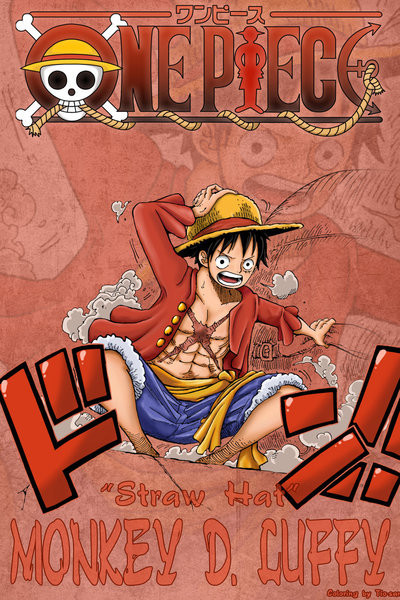

“草帽”蒙其·D·路飞（モンキーD·ルフィ/Monkey D. Luffy）
初次登场：漫画第1话
年龄：17岁→19岁
生日：5月5日
血型：F型
身高：172cm→174cm
故乡：东海·风车村
身份：草帽海贼团船长
喜欢的食物：所有美食，首先是肉。
爱好：喜欢探险，感兴趣于新奇怪异的事物
梦想：找到ONE PIECE，并成为海贼王。
恶魔果实：超人系橡胶果实
身世：父亲是革命军首领蒙奇·D·龙，爷爷是海军中将英雄卡普。
悬赏：3千万（可可亚西村事件）→1亿（阿拉巴斯坦事件）→3亿（司法岛
事件）→4亿（顶上战争）→5亿（德雷斯罗萨篇）
由于他的标志性特征是一顶草帽，因此常被直接称呼为”草帽“。梦想是找到传说中
的ONE PIECE，成为海贼王。性格积极乐观，爱憎分明且十分重视伙伴，对任何危
险的事物都超感兴趣。看似白痴，却是一个大智若愚型的无愧船长之职的人。和其
他传统的海贼所不同的是，他并不会为了追求财富而无故杀戮，而是享受着身为海
贼的冒险。